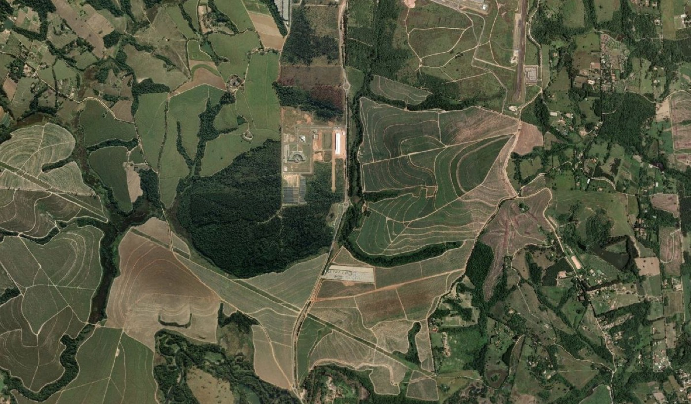

What we do
Most satellite companies own one link. We are putting the whole chain in one place, from the satellite in orbit to the alert on a farmer's phone.

01
Constellation
216 satellites in 24 orbital planes: optical at 0.5 m plus radar that sees through cloud.

02
Ground stations
Six licensed sites in Brazil on X and S band, for satellite control and data downlink.

03
Calibration field
A clear-sky site in Brazil's semi-arid northeast for calibrating optical and radar sensors.

04
AI analysis
AgriEasy and our analysis platform, built in Hong Kong, turn images into answers.